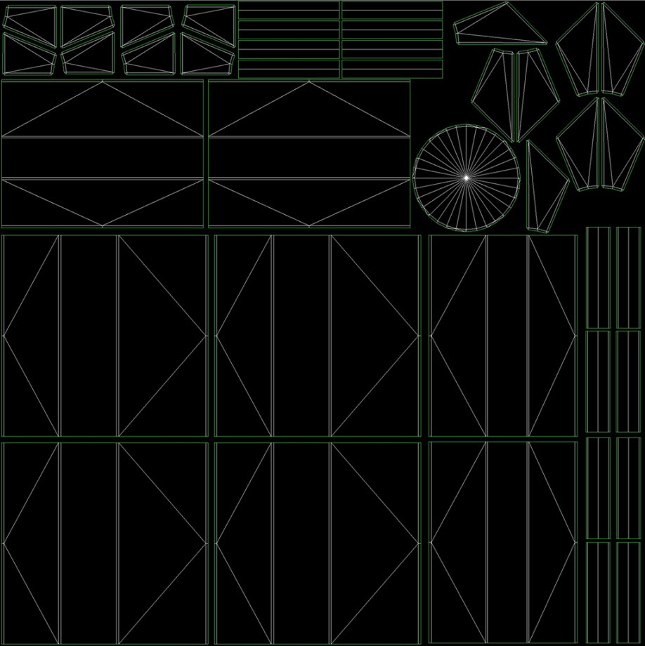
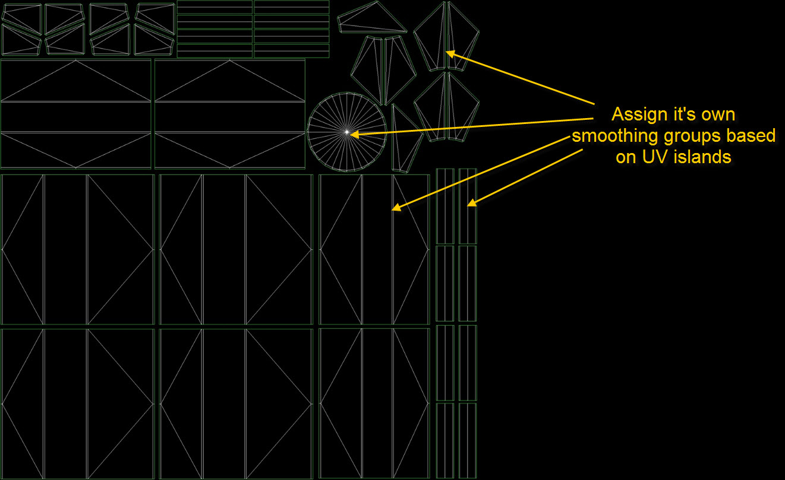
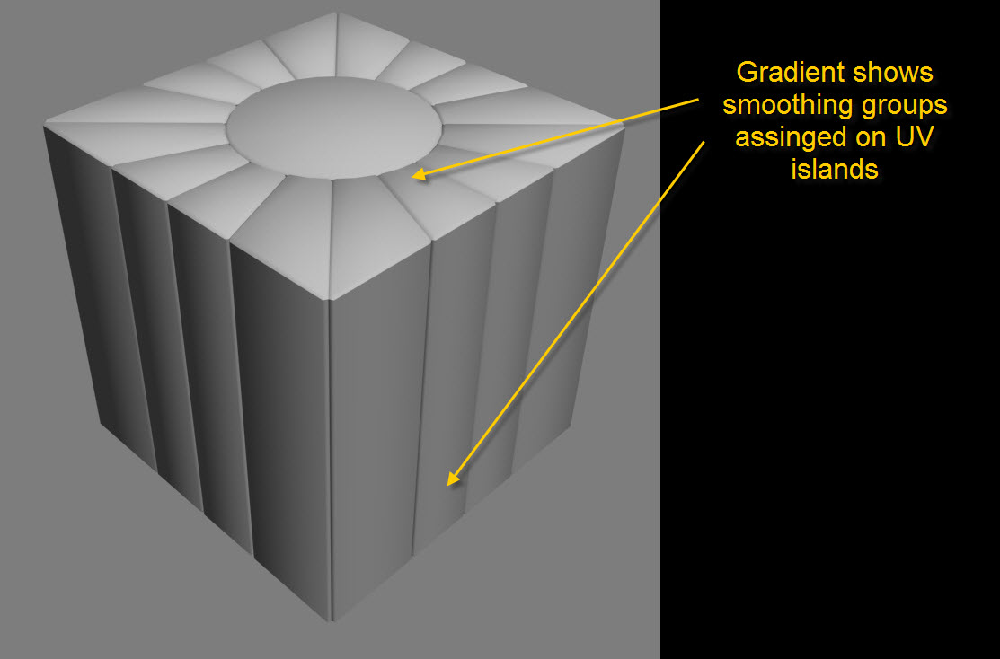
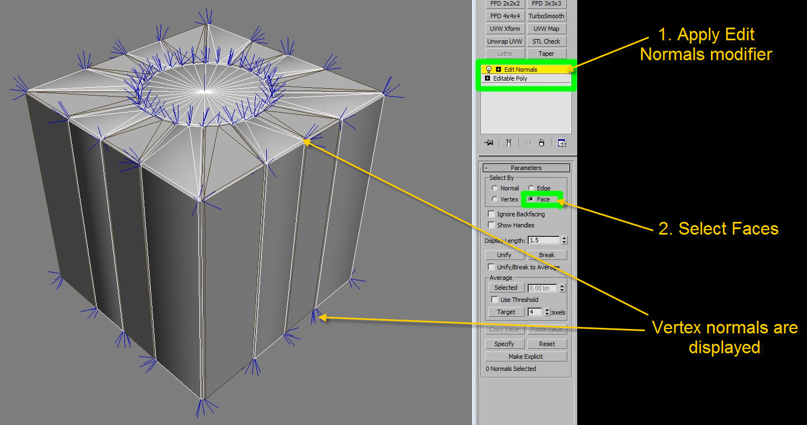
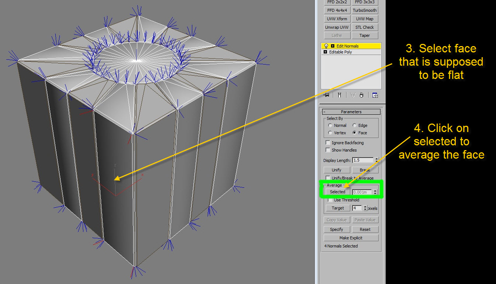
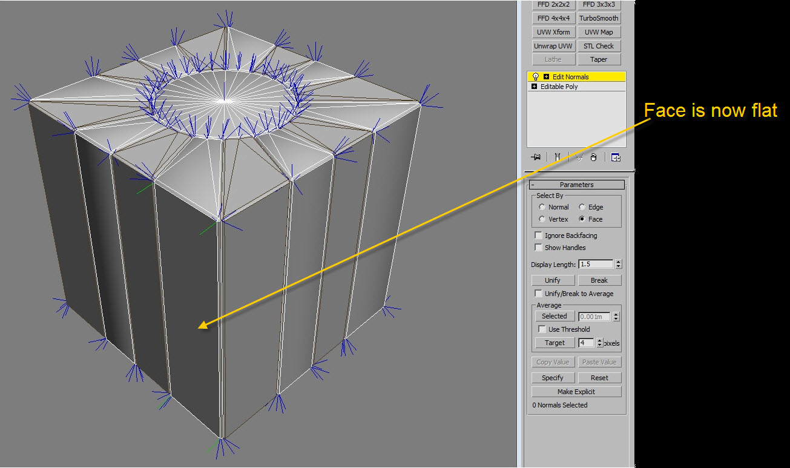
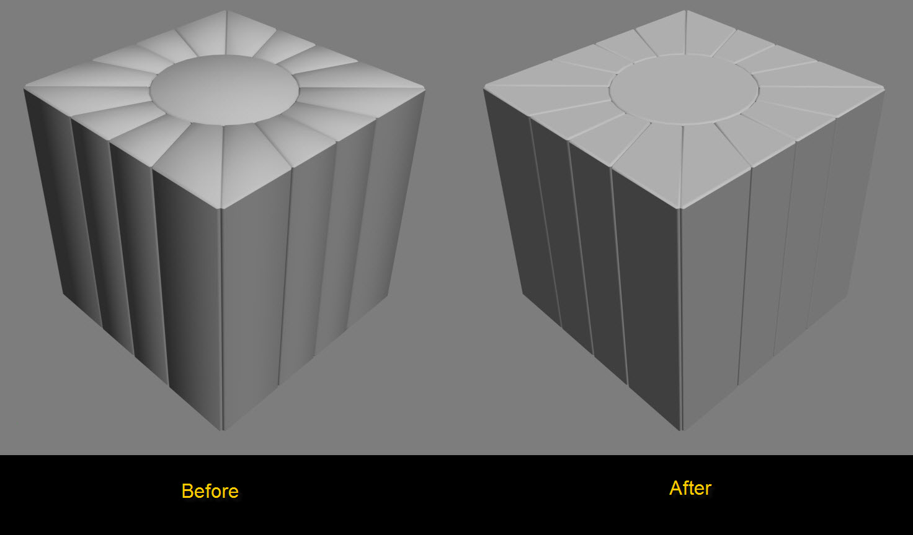
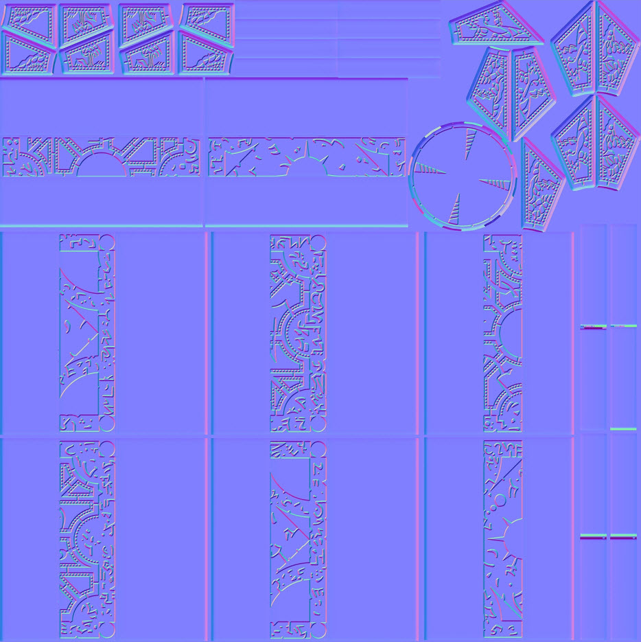
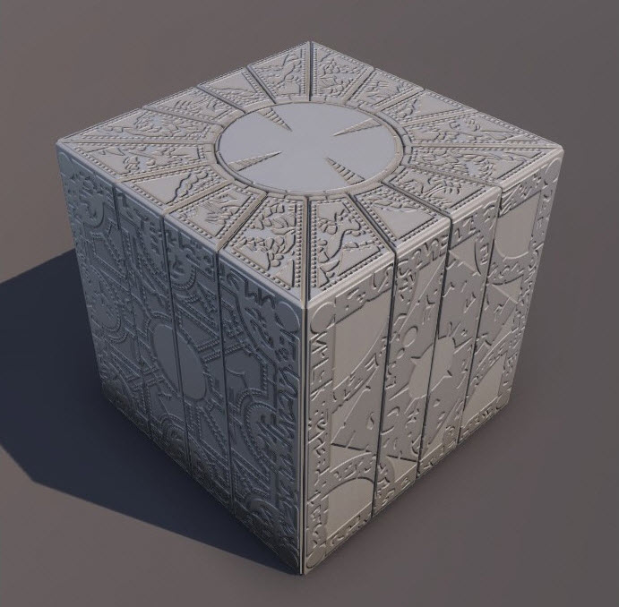

Overview
This tutorial is about how to render hard surface objects tangents without splitting UV's, making it the cheapest and efficient way to create your UV's while maintaining a great result.
We'll use a more complex box for this example:
First of all, we have to make sure that we have everything ready and our low poly UV's however we like, completely disregarding the splitting of hard edges.
We've connected as much together as we could like the small beveled edges etc which normally we would have to split because of the various smoothing groups we would assign to it.

Instead of assigning different smoothing groups to define hard surfaces, we'll apply a single smoothing group to the whole object and only assign different smoothing groups to the various islands we have created the UVs for.
Meaning that every connected island receives it's own smoothing group.

Rendering the normal map at this stage will gives us a bad result due to the various compensations we are going to get around the gradient areas.

To combat theses common issues we are going to force the vertex normals to be flat before we start rendering by using the edit normals modifier.
To do that select the faces that are supposed to be hard edge/flat and average the normals so they straighten out.



We have created a script where you are able to select multiple faces and do them all at the same time. You can download it here: GetVertNormalsFromFace_0_2.ms
Looking at the picture down below you can see the difference:

Now you should be ready to start render out your normal map using Xnormal.
The normal map should render out with minimal compensation issues:

And the final product below:
